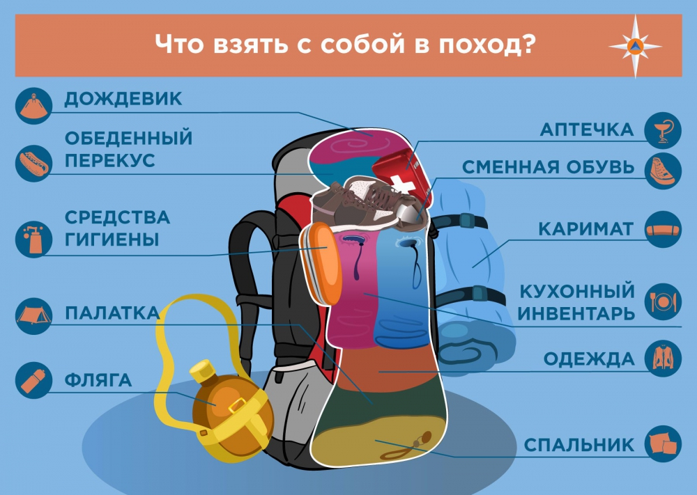

Необходимый минимум вещей
Что взять с собой
-
Для передвижения. Сюда относятся все навигационные
предметы (карта, компас), удобная одежда, обувь. Кроме того для активных
действий на природе понадобятся любые вспомогательные предметы (фонарь,
свисток, лупа, веревка) и аптечка.
-
Для отдыха. Для однодневного путешествия достаточно
будет пледа или туристического коврика. Если в планах стоит проведение
ночи в лесу, то необходимо подумать о палатке и спальных мешках.
Необходимы будут средства для разведения костра (спички, зажигалка,
бумага или газета).
-
Питание. Минимальный набор для пикника, состоящий из
металлической кухонной утвари, ножа и сухпайка. Для длительных походов
есть смысл приобрести газовую горелку.
На главную